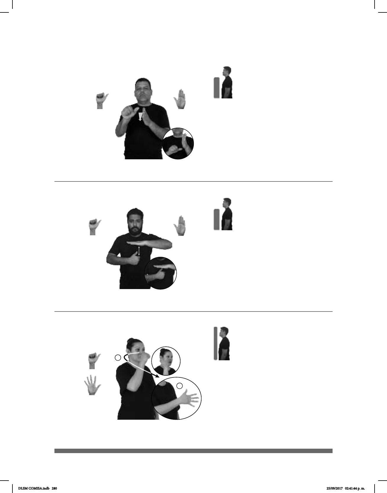

280
(A-143)
Seña: SB
MD A.1, MB B-P.2
MD palma hacia abajo.
MB palma hacia la izquierda.
MD y MB a la altura del
pecho.
MD recto hacia abajo.
1. sust. m. Cada una de las
12 partes en que se divide el año. 2.
sust. m. Conjunto de días consecutivos
desde uno señalado hasta otro de igual
fecha en el mes siguiente.
Seña: SB
MD A.1, MB B-P.2
MD palma hacia la
izquierda MB palma hacia abajo.
A la altura del pecho. MD
debajo de MB.
MD recto hacia arriba.
sust. f. Mueble
compuesto por una plataforma
sostenida por una o varias patas encima
de la cual generalmente se pone o se
hace algo.
(A-142)
Mes
FALTA UN MES PARA pos-MI GRADUCACIÓN
Falta un mes para mi graduación.
MESA pos-MI MAMÁ pos-SU MADERA
La mesa de mi mamá es de madera.
1
2
Seña: SM
Seña que pasa de A.1
a 5.1
Palma hacia la izquierda.
Inicia sobre el lado
derecho de la nariz y termina a la altura
del pecho.
La mano se mueve
siete mientras los dedos se extienden.
interj. ¡No seas
imprudente!
El movimiento hacia el
frente también puede ser recto.
(A-144)
_________________________________¡ !____
NO MAMES ESPAÑOL pro-YO REPROBAR YA
¡No mames, reprobé español!
DLSM COMISA.indb 280 25/09/2017 02:41:44 p. m.